Passo a passo
Abra cada etapa conforme for avançando. Clique em qualquer imagem para ampliar.
Para realizar a integração e receber os pedidos da 99Food diretamente no seu gestor Multipedidos, siga o passo a passo.
Primeiro, copie o ID da sua loja na 99Food. Para isso, acesse a aba “Loja” no seu Portal da 99Food (merchant.99app.com/pt-BR/manager/store) e copie o ID da loja, conforme a imagem abaixo.
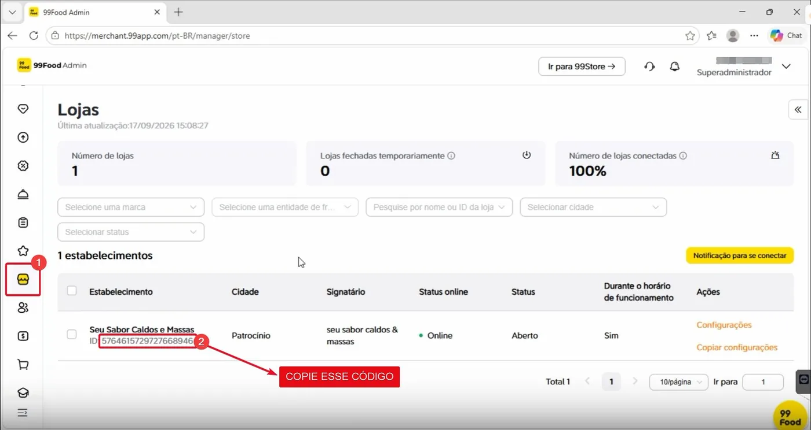
Com o código copiado, acesse a aba de integrações na Multipedidos e cole o ID obtido no passo anterior.
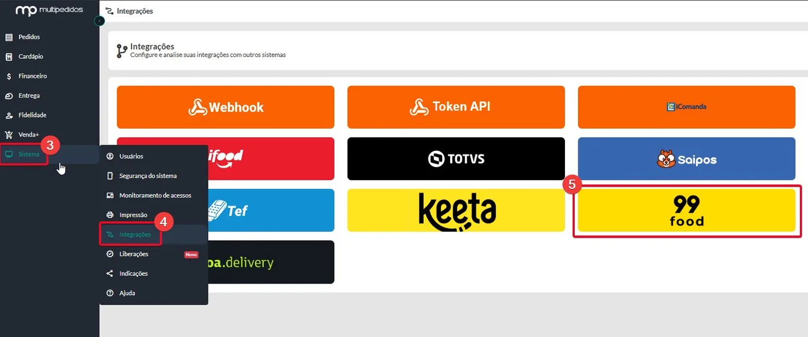
Na janela da 99Food, clique em “Adicionar Loja”.
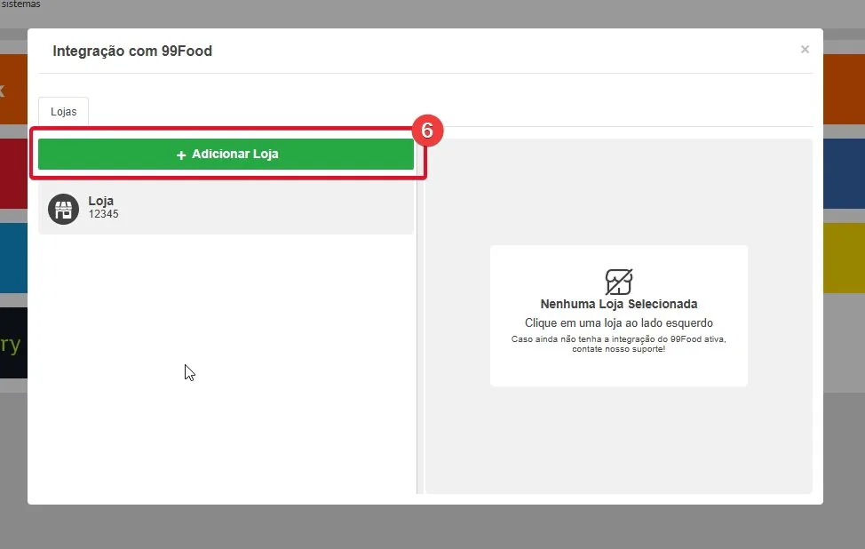
Cole o ID no campo Store ID e clique em “Adicionar Loja”.
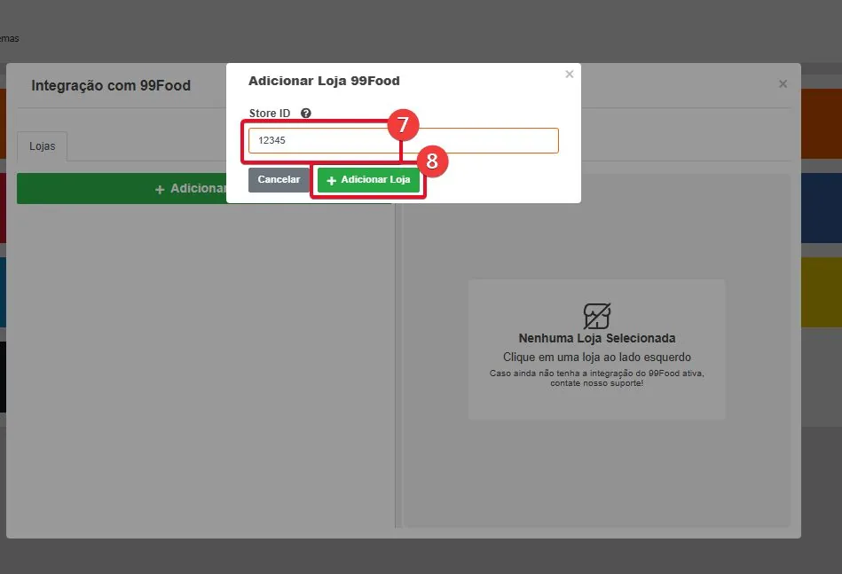
Assim que adicionar o ID da 99Food, será necessário autorizar a integração dentro da 99Food. Clique em “Autorizar no 99Food”.
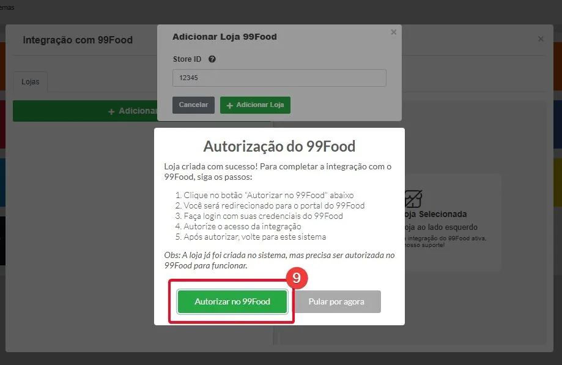
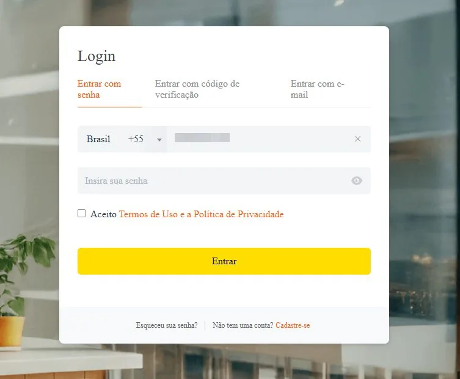
Selecione a loja correspondente e clique em “Confirmar autorização e continuar”.
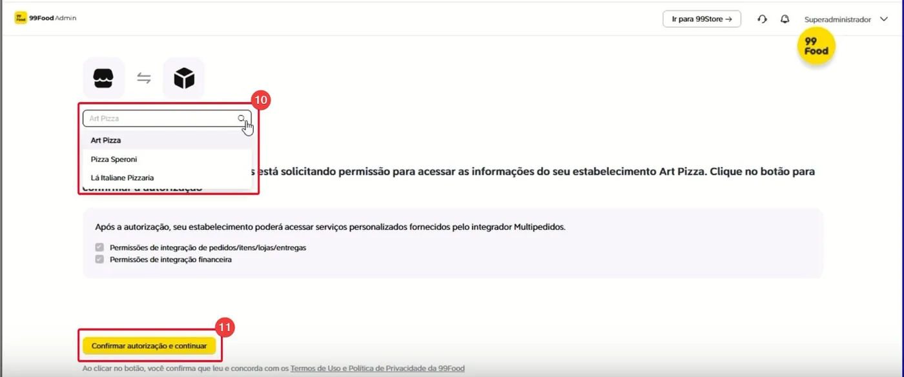
Marque a caixa de seleção com o nome da loja e clique em “Autorizar”.
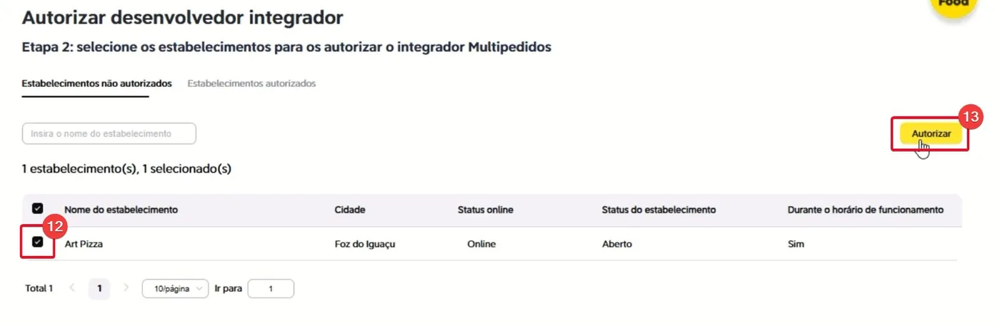
Na janela de confirmação, clique em “Confirmar”.
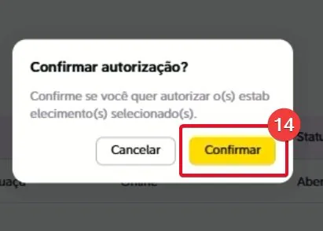
Com a autorização realizada dentro do portal da 99Food, chame o suporte da Multipedidos para concluir o restante da integração, que é feito internamente. Esta é a última etapa.
Com a integração entre 99Food e Multipedidos, os produtos recebidos da 99Food chegam sem a informação de NCM e sem vínculo de cozinhas.
A integração funciona como um “CPF”: cada produto do seu cardápio na Multipedidos recebe um código único, e esse mesmo código é registrado no produto equivalente da 99Food. A partir daí, o sistema entende que o produto da 99Food e o da Multipedidos são o mesmo item, pois possuem o mesmo código PDV.
Passo a passo para a integração
Todos os produtos à venda na 99Food também devem existir na Multipedidos. Se algum item existir apenas na 99Food, será necessário cadastrar esse mesmo item na Multipedidos. Ele não precisa aparecer para os seus clientes e pode ficar pausado no cardápio, mas é importante que exista para que o código PDV seja criado.
Chame o suporte e abra uma solicitação de alteração de cardápio, passando ao atendente a lista detalhada dos itens que precisam ser adicionados.
No seu gestor Multipedidos, acesse:
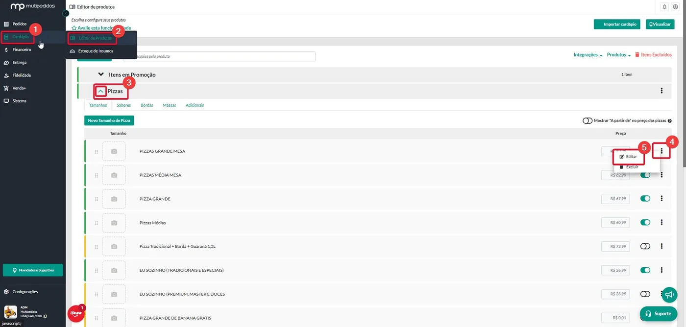
Em seguida, clique em “Editar códigos dos produtos” e copie o código PDV.
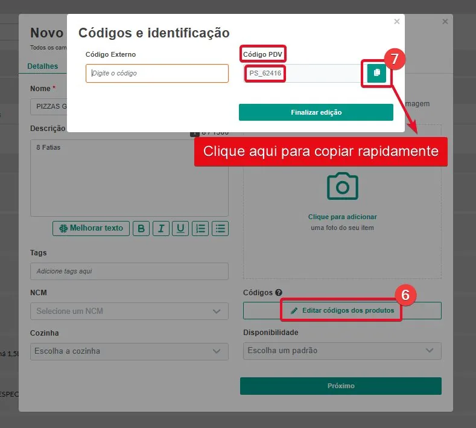
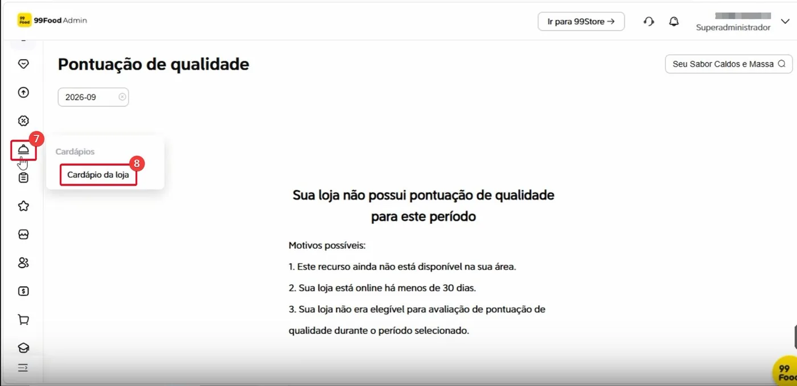
Clique nos 3 pontinhos do item correspondente e depois em “Editar”.
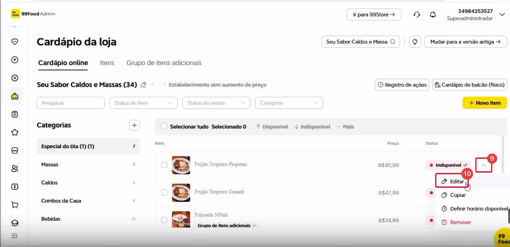
Cole o código PDV copiado no campo destacado na imagem e clique em “Enviar”.
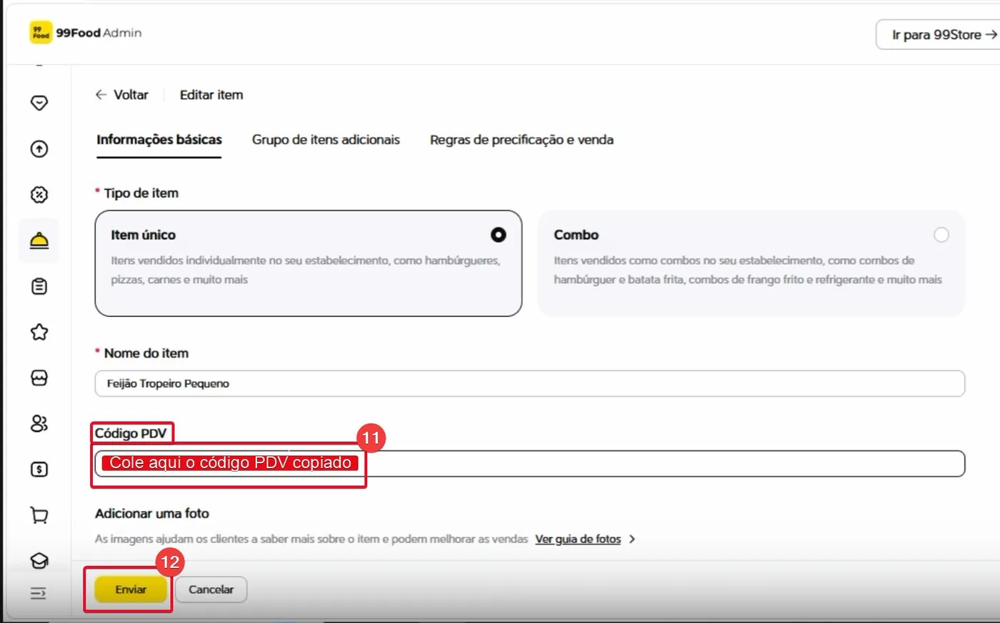
Repita esses passos no restante dos produtos, até que todos os itens da 99Food estejam preenchidos com seus respectivos códigos.